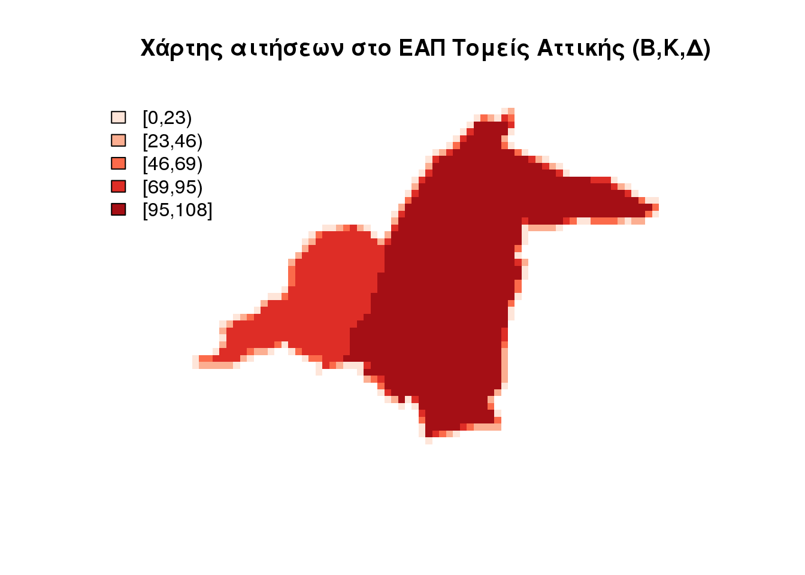

DasyMapR - Περίπτωση χρήσης - Οι αιτήσεις στο ΕΑΠ
Τσακλάνος Βαγγέλης
2016-07-18
Τι περιέχεται σε αυτό το κείμενο
- Εγκατάσταση
- Το πακέτο DasyMapR
- Τα δεδομένα απο το ΕΑΠ
- Οι δασυμετρικοί υπολογισμοί
- Χρήση του LAEA καναβου
- Επιφάνεια Πηγή
- Βοηθητική Επιφάνεια
- Raster Δεδομένα
- Appendix Προετοιμασία των Δεδομένων του ΕΑΠ
Εγκατάσταση
Το πακέτο φιλοξενείται στο προσωπικό αποθετήριο του σπουδαστή στο github. Για να εγκατασταθεί το DasyMapR θα πρέπει καταρχήν να εγκατασταθεί το πακέτο devtools και στην συνέχεια με την χρήση της συνάρτησης install_github() να γίνει η εγκατάσταση του πακέτου
install.packages("devtools")
library(devtools)
install_github("etsakl/DasyMapR", build_vignettes = TRUE)
library(DasyMapR)Περισσότερες πληροφορίες για το πακέτο θα μπορούσε να βρει κάποιος στα file του πακέτου help("DasyMapR") ή στο github ή στην σελίδα και το server πακέτου etsakl.github.io/DasyMapR
Το πακέτο DasyMapR
Το πακέτο της R που αναπτύχθηκε περιέχει μία σειρά εργαλείων που μπορούν να βοηθήσουν το χρήστη να αποδώσει δεδομένα στον ETRS-LAEA κάναβο αλλά και να αποσυσσωματώση δεδομένα με την χρήση βοηθητικής επιφάνειας. Θα παρουσιαστούν κάνοντας χρήση δεδομένων που σχετίζονται με τις αιτήσεις που γίνονται στο ΕΑΠ με σκοπό τη συμμετοχή στις διαδικασίες επιλογής φοιτητών του ιδρύματος. Με την χρήση των εργαλείων που αναπτύχθηκαν αλλά και με την χρήση άλλων πακέτων της R θα γίνει προσπάθεια κατανομής των δεδομένων στο γεωγραφικό κάναβο ETRS (θα περιοριστούμε σε αυτήν την εργασία μόνο στις αιτήσεις που έγιναν από φοιτητές που δηλώνουν κατοικία στην Ελλάδα) και στην συνέχεια θα συσχετιστούν με άλλα δεδομένα από άλλες πηγές. Εδώ για λόγους που σχετίζονται με την προστασία των πρόσωπικών δεδόμενων των χρηστών εμφανίζεται και χρησιμοποιείται μόνο o Ταχυδρομικός Κώδικας, η χώρα η οδός και ο νομός. Εξετάζονται τα δεδομένα.
Τα δεδομένα απο το ΕΑΠ
Είναι αναμενόμενο, όσες ασφαλιστικές δικλείδες και αν προβλεφθούν κατά την εισαγωγή δεδομένων από τους χρήστες που συμπληρώνουν π.χ αιτήσεις, ότι θα υπάρξουν εγγραφές που δεν μπορούν να χρησιμοποιηθούν χωρίς επεξεργασία. Εν προκειμένω μία “δειγματοληπτική” προεπισκόπιση αποδεικνύει τον ισχυρισμό.
data("candidates_addresses")
candidates_addresses <- candidates_addresses[order(candidates_addresses$country),
]
kable(head(candidates_addresses, 5))| country | num | pre | street | zipCode | city | |
|---|---|---|---|---|---|---|
| 556 | country | 0 | pre | street | zipCode | city |
| 789 | country | 0 | pre | street | zipCode | city |
| 3627 | country | 0 | pre | street | zipCode | city |
| 3875 | country | 0 | pre | street | zipCode | city |
| 7425 | country | 0 | pre | street | zipCode | city |
kable(candidates_addresses[round(runif(10, min = 11, max = nrow(candidates_addresses) -
10), 0), ])| country | num | pre | street | zipCode | city | |
|---|---|---|---|---|---|---|
| 193168 | Ελλάδα | 0 | DOD | ΡΩΜΗΣ | 85100.0 | ΡΟΔΟΣ |
| 634670 | Ελλάδα | 0 | PEL | ΗΡΩΩΝ ΠΟΛΥΤΕΧΝΕΙΟΥ | 58200 | ΕΔΕΣΣΑ |
| 546324 | Ελλάδα | 0 | ATT | ΑΓΙΑΣ ΒΑΡΒΑΡΑΣ | 19004 | ΣΠΑΤΑ |
| 284276 | Ελλάδα | 0 | THS | ΚΑΡΑΪΣΚΑΚΗ | 54641.0 | ΘΕΣΣΑΛΟΝΙΚΗ |
| 518256 | Ελλάδα | 0 | THS | ΦΙΛΗΝΤΑ ΜΕΝΟΥ | 54454 | ΘΕΣΣΑΛΟΝΙΚΗ |
| 141003 | Ελλάδα | 0 | THS | ΙΩΑΚΕΙΜ Γ | 55132.0 | ΘΕΣΣΑΛΟΝΙΚΗ |
| 682610 | Ελλάδα | 0 | AIT | ΣΚΙΠΗ | 30100 | ΑΓΡΙΝΙΟ |
| 146111 | Ελλάδα | 0 | MAG | ΑΙΔΙΝΙΟΥ | 38446.0 | ΒΟΛΟΣ |
| 188332 | Ελλάδα | 0 | ATT | ΑΝΑΚΡΕΟΝΤΟΣ | 11633.0 | ΑΘΗΝΑ |
| 55634 | Ελλάδα | 0 | ATT | ΨΑΡΡΩΝ | 16345.0 | ΗΛΙΟΥΠΟΛΗ |
kable(tail(candidates_addresses, 5))| country | num | pre | street | zipCode | city | |
|---|---|---|---|---|---|---|
| 780455 | Φινλανδία | 0 | NGR | HAUHONTIE | 00550 | HELSINKI |
| 518971 | ΧΑΛΑΝΔΡΙ | 0 | ||||
| 665446 | ΧΑΛΑΝΔΡΙ | 0 | ||||
| 170904 | Χονγκ-Κόνγκ | 0 | ATT | ΚΩΝΣΤΑΝΤΟΠΟΥΛΟΥ | 14233.0 | ΑΘΗΝΑ |
| 216045 | Χονγκ-Κόνγκ | 0 | ATT | ΑΝΤΙΓΟΝΗΣ | 104-43 | ΑΘΗΝΑ |
Είναι προφανές ότι τα δεδομένα απαιτούν προετοιμασία για να χρησιμοποιηθούν. Η προετοιμασία των δεδομένων παρατίθεται στο τέλος του κειμένου όπου υπάρχει ο κώδικας και παρουσίαση των βοηθητικών δεδομένων που θα χρησιμοποιηθούν για να πετύχουμε την γεωαναφορά τους. Όπως παρατηρείται τα δεδομένα εχουν διορθωθεί για τις εγγραφές “pre” (~νομός) και τις χώρες προέλευσης (country).Ο νομός ως γεωγραφική αναφορά εμφανίζει λιγότερες λανθασμένες εγγραφές αφού οι χρήστες σε γενικές γραμμές γνωρίζουν τον νόμο που διαμένουν όχι όμως απαραίτητα και τον Ταχυδρομικό Κώδικα της διεύθυνσης που δηλώνουν. Λιγότερο αξιόπιστη είναι αναφορά στην οδό όπου η ονοματοθεσία και η αριθμοδοσία (όταν ή αν) γίνεται από τους οργανισμούς της Τοπικής Αυτοδιοίκησης με χρονική και τοπική διασπορά. Αποτέλεσμα είναι να μην μπορούν να θεωρηθούν αξιόπιστα δεδομένα ακόμη και όταν συμπληρώνονται σωστά από τον χρήστη. Όμως η οπτικοποίηση των δεδομένων με μονάδα απαρίθμησης μόνο το νομό αποκρύπτει απο το χρήστη σημαντικές πληροφορίες η τον παραπλανεί.
Δασυμετρική Χαρτογράφια στα δεδομένα του ΕΑΠ.
Μετά την επεξεργασία των δεδομένων, που όπως προαναφέρθηκε ο τρόπος αναλύεται στο τέλος του κειμένου, ανακτούμε τα δεδομένα που συνοδεύουν το πακέτο και αφορούν τις αιτήσεις στο ΕΑΠ. Οι αιτήσεις έχουν ομαδοποιηθεί ανά χωρική περιοχή αναφοράς. Ας οπτικοποιήσουμε κατά αρχήν τα δεδομένα όπως αρχικά χορηγήθηκαν με ένα απλό χωροπληθή χάρτη 5 τάξεων και μονάδα απαρίθμισης το νομό.
To “σφάλμα” της απεικόνισης
Αναναπαριστούμε τον αριθμό των αιτήσεων στα όρια του νομού γενικευοντας σε διαστήματα τόσα ώστε οι αποχρώσεις να διακρίνονται απο τον χρήστη. Αυτός ο χάρτης δημιουργεί εσφαλμένη εντύπωση στο χρήστη για 2 κυρίως λόγους. Καταρχήν σε καθε νομό φαίνεται ομοιογενής ο αριθμός των αιτούντων. Έτσι τα Κύθηρα φαίνεται να ανήκουν στην ίδια κατηγορία με την Αθήνα δηλαδή έχοντας αριθμό αιτήσεων μεταξύ 11000 και 350000. Το ίδιο βέβαια μπορεί να προκαλέσει και η επιλογή της διαίρεσης σε 5 διαστήματα τιμών όπου για τις περισσότερες περιοχές της επικράτειας δεν λαμβάνεται καμία πληροφορία (Οι 685 αιτήσεις απο το νομό Ευρυτανίας δίνουν την ίδια εντύπωση ~3500 της Άρτας). Το πρώτο σφάλμα “οφείλεται” στην “επιλογή” της μονάδας απαρίθμησης (περίπου όρια νομού) και αυτό θα επιχειρηθεί να “διορθωθεί” με την χρήση των εργαλείων που αναπτύχθηκαν.
par(mar = c(0.8, 0.8, 0.8, 0.8))
data("EAP.application.pre_err")
dasymapPlot(EAP.application.pre_err, 5)
title(main = "Οπτικοποιήση των αιτήσεων ανα Νομό")err_map <- dasymapPlot.leaflet(EAP.application.pre_err, 5)
saveWidget(widget = err_map, file = "err_map.html", selfcontained = FALSE)“Πραγματικά δεδομένα” και περιορισμοί
Με βάση τους διορθωμένους Ταχυδρομικούς Κώδικές είναι δυνατό να δημιουργήσουμε μια “ρεαλιστικότερη” εικόνα για τις περιοχές που έγιναν οι αιτήσεις στο ΕΑΠ. Εδώ με την πληροφορία του Ταχυδρομικού Κώδικα που μας επιτρέπει να έχουμε αναφορά των αιτούντων στα όρια του προ “καποδιστριακού” Δήμου. Αυτή η “ρεαλιστικότερη” απεικόνιση όπου η επιλογή της μονάδα απαρίθμησης (περίπου τώρα τα όρια του π.κ. δήμου) έχει βελτιώσει την απεικόνιση των δεδομένων. θα μπορούσε μάλιστα να συγκριθεί με το αποτέλεσμα της δασυμετρικής χαρτογραφίας που θα εφαρμόζουμε στην συνέχεια.
par(mar = c(0.8, 0.8, 0.8, 0.8))
data("EAP.application.loc")
dasymapPlot(EAP.application.loc, 2)
title(main = "Χάρτης αιτήσεων στο ΕΑΠ (Κατανομή με T.K.) ")pc_map <- dasymapPlot.leaflet(EAP.application.loc, 2)
saveWidget(widget = pc_map, file = "pc_map.html", selfcontained = FALSE)Ήδη αυτή η εικόνα δίνει άλλη αντίληψη για την διασπορά των υποψηφίων στην επικράτεια απ’ ότι ο προηγούμενος. Για παράδειγμα τα Κύθηρα δεν ανήκουν στις περιοχές με το υψηλότερο αριθμό δηλώσεων. Έχουμε το μεγαλύτερο αριθμό αιτήσεων στους Δήμους με μεγάλα Αστικά κέντρα κ.λ.π. Όμως και εδώ υπάρχουν σφάλματα λόγω των διοικητικών ορίων. Π.χ Μικροί Δήμοι εξυπηρετούνται απο το Ταχυδρομικό γραφείο της περιοχής του μεγαλύτερου Δήμου. Έτσι εμφανίζονται και πάλι με πλασματικό αριθμό αιτούντων λόγω της επιλογής της επιφάνειας απαρίθμησης.
Αν θέλαμε όμως να απεικονίσουμε την κατανομή σε μεγαλύτερη κλίμακα όπου δεν υπάρχουν δεδομένα απαρίθμησης ή τα στοιχεία έχουν συσσωματωθεί και αποκρύπτεται η εν λόγω πληροφορία τότε θα έπρεπε να χρησιμοποιήσουμε κάποια άλλη μέθοδο. Εδώ προτείνεται η μέθοδος της δασυμετρικής χαρτογραφία και το λογισμικό που αναπτύχθηκε στην R (DasyMapR) για να κάνει αυτή την εργασία.
Ας δούμε τώρα μία απεικόνιση του φαινομένου ‘αιτήσεις ΕΑΠ’ σε πιο μεγάλη κλίμακα. Επιλέγεται η Αττική και πιο συγκερκιμένα ο Βόρειος (NUTS 301) o Δυτικός (NUTS 302) και Κεντρικός (NUTS 303) και αποδίδεται πλέον με χάρτη κουκίδων.Σε κάθε κουκκίδα αντιστοιχούν 100 αιτήσεις και τοποθετείται τυχαία στο πολύγωνο του τομέα. Ας αντιληφθούμε την διαδικασία σαν προσπάθεια να τοποθετήσουμε την κουκκίδα στην (όσο το δυνατόν) πραγματική της θέση. Αυτό θα γίνει με την προβολή της επιφάνειας πηγής στον κάναβο την χρήση βοηθιτικής επιφάνειας και τέλος την εφαρμογή δασυμετρικών υπολογισμών
# Φορτώνουμε τα όρια NUTS. Χρησιμοποείται η EtrsTransform του Πακέτου
# DasyMapR για την αλλαγή του συστήματος συντεταγμεων στο επιθυμητό ETRS.
NUTS_2013_01M_EL_ETRS <- EtrsTransform(NUTS_2013_01M_EL)
# Μας ενδιαφέρπυν οι περιφεριακές ενότητες(νομοι)
NUTS_2013_01M_EL_ETRS <- NUTS_2013_01M_EL_ETRS[grep("^EL\\d{3}", NUTS_2013_01M_EL_ETRS[["NUTS_ID"]]),
]
count.EAP.applicants <- as.data.frame(table(candidates_addresses_el_cor["NUTS_313"],
dnn = "NUTS_ID"), stringAsFactor = F)
EAP.application.NUTS <- merge(x = NUTS_2013_01M_EL_ETRS, y = count.EAP.applicants,
by = "NUTS_ID")
# H χρήση της merge ενδεχομένως να προκαλέσει αλλαγή στα rownames του
# dataframe οπότε έστω και προληπτικά τα διορθώνουμε
row.names(EAP.application.NUTS@data) <- sapply(slot(EAP.application.NUTS, "polygons"),
function(x) slot(x, "ID"))
# Διαλέγουμε περιοχή
Attiki <- EAP.application.NUTS[grep("^EL30[1-6]", EAP.application.NUTS[["NUTS_ID"]]),
]
EAP.application.NUTS.30 <- EAP.application.NUTS[grep("^EL30[1-3]", EAP.application.NUTS[["NUTS_ID"]]),
]
applicants <- EAP.application.NUTS.30@data$Freq/100
plot(EAP.application.NUTS.30)
for (i in 1:length(EAP.application.NUTS.30)) {
EAP.application.NUTS.30.pl <- SpatialPolygons(EAP.application.NUTS.30@polygons)
points(spsample(EAP.application.NUTS.30.pl[i], applicants[i], "random"),
pch = 3, cex = 0.02, col = 2)
}
title(main = "Χάρτης αιτήσεων στο ΕΑΠ", sub = "Περιφέρεια Αττικής (Βορ,Κεντ.,Δυτ. Τομέας")
plot(Attiki, add = T, )kable(head(EAP.application.NUTS.30@data[, c(1, 5)]), col.names = c("NUTS_ID",
"Αιτήσεις"))| NUTS_ID | Αιτήσεις | |
|---|---|---|
| 745 | EL301 | 65139 |
| 746 | EL302 | 41825 |
| 747 | EL303 | 118679 |
Χρήση του LAEA καναβου με δεδομένα απο την απο την Eurostat (resolution 1km)
Θα κάνουμε αρχικά χρήση δεδομένων του ESPOΝ ως βοηθητικής επιφάνειας δηλαδή το κάναβο LAEA με βοηθητική επιφάνεια με (γεωστατιστική επιφάνεια) του πληθυσμού του 2011 όπως αυτός έχει κατανεμηθεί με αρκετά περίπλοκους αλγορίθμους στον κάναβο ETRS.
Θα ανάγουμε καταρχήν τις αιτήσεις σε αριθμό αιτήσεων αν 1000 κατοίκους κάνοντας χρήση δεδομένων της EUROSTAT. Αυτό θα γίνει για να χρησιμοποιηθεί στην κατανομή που θα ακολουθήσει αλλά επιπλέον τονίζεται για να δειχθεί ότι η απεικόνιση περισσότερο του ενός φαινομένων είναι ένας τρόπος “εξόρυξης γνώσης”.
Μεταφορτώνονται τα δεδομένα
# O παρακάτω κώδικας δεν τρέχει πάντα γιατί εξαρτάται απο την σύνδεση
# nama_10r_3popgdp <- get_eurostat(id = 'nama_10r_3popgdp' ,filters =
# list(time=2013),time_format = 'num')
POP_EL <- nama_10r_3popgdp[grep("^EL\\d{3}", nama_10r_3popgdp$geo), ]
kable(head(POP_EL))| unit | geo | time | values | |
|---|---|---|---|---|
| 670 | THS | EL301 | 2009 | 616 |
| 671 | THS | EL302 | 2009 | 512 |
| 672 | THS | EL303 | 2009 | 1097 |
| 673 | THS | EL304 | 2009 | 555 |
| 674 | THS | EL305 | 2009 | 504 |
| 675 | THS | EL306 | 2009 | 167 |
POP_EL.30 <- nama_10r_3popgdp[grep("^EL30[1-6]", nama_10r_3popgdp$geo), ]και κάνουμε τους υπολογισμούς
EAP.application.NUTS@data$POP <- unlist(sapply(EAP.application.NUTS$NUTS_ID,
FUN = function(x) POP_EL$values[match(x, POP_EL$geo)]))
EAP.application.NUTS[["appPerhab"]] <- round(EAP.application.NUTS@data$Freq/EAP.application.NUTS@data$POP,
0)
kable(head(EAP.application.NUTS))| NUTS_ID | STAT_LEVL_ | SHAPE_AREA | SHAPE_LEN | Freq | POP | appPerhab | |
|---|---|---|---|---|---|---|---|
| 667 | EL522 | 3 | 0.3924027 | 4.937318 | 93328 | 1136 | 82 |
| 668 | EL523 | 3 | 0.2700854 | 3.152490 | 3252 | 81 | 40 |
| 669 | EL524 | 3 | 0.2679729 | 3.318840 | 6994 | 142 | 49 |
| 670 | EL525 | 3 | 0.1616531 | 2.621749 | 7195 | 127 | 57 |
| 671 | EL631 | 3 | 0.5604019 | 6.666641 | 10719 | 215 | 50 |
| 672 | EL632 | 3 | 0.3360470 | 3.150293 | 33266 | 316 | 105 |
Ας δούμε και πάλι τα αποτελέσματα σε ένα διαδραστικό χάρτη.
dasymapPlot(EAP.application.NUTS, 7)
title(main = "Χάρτης αιτήσεων στο ΕΑΠ", sub = "αιτήσεις ανα 1000 κατοίκους")app_per_ths <- dasymapPlot.leaflet(EAP.application.NUTS, 7)
saveWidget(widget = app_per_ths, file = "app_per_ths.html", selfcontained = FALSE)Ένα λοιπόν συμπέρασμα μπορεί να είναι ότι όπου υπάρχει υψηλός αριθμός φοιτητών υπάρχουν και πολλές αιτήσεις στο ΕΑΠ. (Πάτρα,Ιωάννινα,Αθηνά…) Θα μπορούσε λοιπόν κάποιος να συσχετίσει το τόπο κατοικίας φοιτητών στην Αθήνα με π.χ. αιτήσεις σε συγκεκριμένα προγράμματα? Ή να συνδέσει το εισόδημα με τις αιτήσεις. Π.χ. ο βόρειος τομέας έχει μεγαλύτερο αριθμό αιτήσεων ανά κάτοικο απο τον δυτικό τομέα (Αττική). Τα παραπάνω δεν είναι το κύριο αντικείμενο του κειμένου όμως προσπαθούν να κεντρίσουν το ενδιαφέρον για την ενασχόλησή με τα αποτελέσματα της εργασίας.
Προετοιμάσια επιφάνειας πηγής (resolution 1000m)
Θα μετατρέψουμε την στατιστική επιφάνεια “αιτήσεις ανά 1000 κατοίκους” σε κάναβο με την χρήση της etrsSurfacePar που αναπτύχθηκε και περιέχεται στο πακέτο (μέθοδος που κάνει διάχυτο υπολογισμό) που επιταχύνει πολύ τους υπολογισμούς. Ας επιλέξουμε την Αττική για οικονομία χρόνου και χώρου.
EAP.application.NUTS.30 <- EAP.application.NUTS[grep("^EL30[1-6]", EAP.application.NUTS[["NUTS_ID"]]),
]
EAP.application.NUTS.grid.30 <- etrsSurfacePar(EAP.application.NUTS.30, over.method.type = "MaxArea",
cell.size = 1000)## ~~~ ETRS validity ~~~Χρησιμοποιούμε την joinMaxAreaSurfaceDataFrames, επίσης μέθοδος του πακέτου, για ενημερώσουμε την επιφάνεια που δημιουργήσαμε με τα atrributes της επιφάνειας πηγής.
EAP.application.NUTS.grid.30 <- joinMaxAreaSurfaceDataFrames(the.surface = EAP.application.NUTS.30,
the.EtrsSurface = EAP.application.NUTS.grid.30)Και τελικά ας δούμε την επιφάνεια πηγή που παράχθηκε με την βοήθεια της συνάρτησης dasymaplot του πακέτου που παράγει χωροπληθείς χάρτες 5 τάξεων.
# EAP.application.NUTS.grid.30<-EAP.application.NUTS.grid[grep('^EL30[1-6]',EAP.application.NUTS.grid[['NUTS_ID']]),]
dasymapPlot(EAP.application.NUTS.grid.30, 11)
title(main = "Χάρτης αιτήσεων στο ΕΑΠ", sub = "Επιφάνεια Πηγή σε τομείς της Αττικής")kable(head(EAP.application.NUTS.grid.30))| FEATURE | CELLCODE | EASTOFORIGIN | NORTHOFORIGIN | NUTS_ID | STAT_LEVL_ | SHAPE_AREA | SHAPE_LEN | Freq | POP | appPerhab | |
|---|---|---|---|---|---|---|---|---|---|---|---|
| 1kmE5536N1765 | 745 | 1kmE5536N1765 | 5536000 | 1765000 | EL301 | 3 | 0.0136015 | 0.7073062 | 65139 | 616 | 106 |
| 1kmE5534N1766 | 745 | 1kmE5534N1766 | 5534000 | 1766000 | EL301 | 3 | 0.0136015 | 0.7073062 | 65139 | 616 | 106 |
| 1kmE5535N1766 | 745 | 1kmE5535N1766 | 5535000 | 1766000 | EL301 | 3 | 0.0136015 | 0.7073062 | 65139 | 616 | 106 |
| 1kmE5536N1766 | 745 | 1kmE5536N1766 | 5536000 | 1766000 | EL301 | 3 | 0.0136015 | 0.7073062 | 65139 | 616 | 106 |
| 1kmE5531N1767 | 745 | 1kmE5531N1767 | 5531000 | 1767000 | EL301 | 3 | 0.0136015 | 0.7073062 | 65139 | 616 | 106 |
| 1kmE5533N1767 | 745 | 1kmE5533N1767 | 5533000 | 1767000 | EL301 | 3 | 0.0136015 | 0.7073062 | 65139 | 616 | 106 |
Ας δούμε τώρα αν μπορούμε να χρησιμοποιήσουμε δεδομένα από τις UMZ200 που ειδικά για το πληθυσμό προσφέρονται δεδομένα στον ETRS-LAEA κάναβο για τα έτη 2006 2011 που έχουν προκύψει με αρκέτα περίπλοκους αλγόριθμους.
kable(head(GEOSTAT_grid_POP_1K_2011_V2_0_el))| TOT_P | GRD_ID | CNTR_CODE | METHD_CL | YEAR | DATA_SRC | TOT_P_CON_DT | |
|---|---|---|---|---|---|---|---|
| 1059777 | 4 | 1kmN1910E5127 | EL | M | 2011 | EL | 0 |
| 1059778 | 108 | 1kmN1911E5127 | EL | M | 2011 | EL | 0 |
| 1059779 | 30 | 1kmN1910E5128 | EL | M | 2011 | EL | 0 |
| 1059780 | 250 | 1kmN1911E5128 | EL | M | 2011 | EL | 0 |
| 1059781 | 41 | 1kmN1917E5141 | EL | M | 2011 | EL | 0 |
| 1059782 | 19 | 1kmN1918E5141 | EL | M | 2011 | EL | 0 |
Μία πιο προσεκτική ματιά σε αυτά τα δεδομένα δείχνει δεν ακολουθούν την προτεινόμενη κωδικοποίηση των κελιών της INSPIRE Specification on Geographical Grid Systems Θα γίνει χρήση της μέθοδοι etrsReverseCellCode του πακέτου DasyMapR. Τέλος Η απλή συγχώνευση μας δίνει ένα κάναβο με τις δυο τιμές που ενδιαφέρουν δηλαδή του των αριθμό των κατοίκων ανά κελί και τον αριθμό των κατοίκων ανά 1000 κατοίκους.
GEO_POP_2011_rev <- etrsReverseCellCode(df = GEOSTAT_grid_POP_1K_2011_V2_0_el,
cell.code.col = 2)
GEO_POP_2011_rev <- GEO_POP_2011_rev[, c(1, 8)]
EAP.application.NUTS.grid.30 <- merge(EAP.application.NUTS.grid.30, by = 0,
GEO_POP_2011_rev, all = F)
row.names(EAP.application.NUTS.grid.30@data) <- sapply(slot(EAP.application.NUTS.grid.30,
"polygons"), function(x) slot(x, "ID"))
EAP.application.NUTS.grid.30@data$applicants <- round((EAP.application.NUTS.grid.30@data$appPerhab *
EAP.application.NUTS.grid.30@data$TOT_P)/1000, 0)Ας δούμε και πάλι την κατανομή σε ανά χάρτη με τους αιτούντες ανά κελί
dasymapPlot(EAP.application.NUTS.grid.30, 15)cell_applicants <- dasymapPlot.leaflet(EAP.application.NUTS.grid.30, 15)
saveWidget(widget = cell_applicants, file = "cell_applicants.html", selfcontained = FALSE)Μερικά “εύκολα” συμπεράσματα
Ήδη είναι κατανοητό ότι η κατανομή αυτή είναι ήδη πιο κοντά στην πραγματικότητα. Π.χ. Δεν εμφανίζονται πλέον αιτούντες στην Πάρνηθα!
Δασυμετρικοί υπολογισμοί (resolution 500m)
Οι υπολογισμοί που ακολουθούν θα γίνουν με τις αμιγώς δασυμετρικές μεθόδους που αναπτύχθηκαν δημιουργώντας και την βοηθητική επιφάνεια. Αρχικά θα κάνουμε χρήση των δεδομένων CORINE που αφορούν την κάλυψη. Ξεκινάμε πάλι με την προετοιμασία της επιφάνειας πηγής.
Η Επιφάνεια Πηγή
Ο αριθμός των αιτούντων ανά νομό θα προβληθεί στον ETRS κάναβο δημιουργώντας την επιφάνεια πηγή. Αρχικά θα Θα πρέπει να μετατραπεί από απόλυτη τιμή σε πυκνότητα αιτούντων. Στο πακέτο έχει αναπτυχθεί η μέθοδος :DasyMapR::ActullVal2Density που θα κάνει την μετατροπή
EAP.application.NUTS.301 <- EAP.application.NUTS[grep("^EL30[123]", EAP.application.NUTS[["NUTS_ID"]]),
]
# Διαιρούμε με το εμβαδό της νεάς μονάδας απαρίθμισης
EAP.application.NUTS.301 <- ActuallVal2Density(EAP.application.NUTS.301, surface.value.col = 5,
area.unit = 1e+06)
EAP.source.surface <- etrsSourceSurface(input.surface = EAP.application.NUTS.301,
over.method.type = "PropCal", surface.value.col = 7, cell.size = 500)## ~~~ ETRS validity ~~~
## ~~~ ETRS validity ~~~
## ~~~ ETRS validity ~~~
## ~~~ ETRS validity ~~~dasymapPlot(EAP.source.surface, 4)
title(main = "Χάρτης αιτήσεων στο ΕΑΠ Τομείς Αττικής (Β,Κ,Δ)")
kable(head(EAP.source.surface@data))| CELLCODE | EASTOFORIGIN | NORTHOFORIGIN | CELLVALUE | |
|---|---|---|---|---|
| 500mE55310N17575 | 500mE55310N17575 | 5531000 | 1757500 | 0.2916 |
| 500mE55305N17580 | 500mE55305N17580 | 5530500 | 1758000 | 1.6416 |
| 500mE55310N17580 | 500mE55310N17580 | 5531000 | 1758000 | 97.3512 |
| 500mE55315N17580 | 500mE55315N17580 | 5531500 | 1758000 | 77.0904 |
| 500mE55320N17580 | 500mE55320N17580 | 5532000 | 1758000 | 51.7752 |
| 500mE55325N17580 | 500mE55325N17580 | 5532500 | 1758000 | 26.4492 |
Η κατανομή που έγινε στα κελιά του κανάβου περίπου ίσο κατένειμε τον αριθμό των αιτήσεων με εξαίρεση τα οριακά κελιά. Ας το δούμε στο χάρτη που ακολουθεί. Θα χρειαστούμε κάποια βοηθητικά δεδομένα για να επιτύχουμε την ρεαλιστικότερη κατανομή των αιτούντων στο χώρο. Είναι απολύτως λογικό να θεωρήσουμε ότι οι ταχυδρομικοί κώδικες αντιστοιχούν σε κατοικημένες περιοχές. Αυτή είναι και η βοηθητική επιφάνεια που θα χρησιμοποιήσουμε. δηλαδή τις κατοικημένες περιοχές όπως δίνονται απο τα αρχεία το πρόγραμμα CORINE
Η βοηθιτική Επιφάνεια
Για να δημιουργήσουμε την βοηθητική επιφάνεια θα χρησιμοποιήσουμε την συνάρτηση etrsAncillarySurface μέθοδο που έχει αναπτυχθεί και περιλαμβάνεται στο πακέτο DasyMapR και θα φορτωθούν τα δεδομένα που περιέχονται στο πακέτο.
residential.areas <- clc_v2_code_11x_el[EAP.application.NUTS.301, ]
# residential.areas<-residential.areas[-10,]
bound301 = list(EAP.application.NUTS.301, border = 2, lwd = 2)
bound = list(EAP.application.NUTS)
spplot(residential.areas, "code_00", main = "Περιοχές Κατοικίας CORINE",
sp.layout = list(bound, bound301), col.regions = rev(terrain.colors(2)))Θα αποδώσουμε και σχετικές πυκνότητες για τις περιοχές κάνοντας την παραδοχή ότι στις πυκνοδομημένες περιοχές (111 - Συνεχής αστική οικοδόμηση) θα έχουμε περισσότερες κατοικίες απο ότι στις πιο αραιοδομημένες (112 - Διακεκομμένη αστική οικοδόμηση)
ReDens111 <- round(3/4, 2)
ReDens112 <- round(1/4, 2)
residential.areas@data[which(residential.areas@data[, "code_00"] == 111), "ReDens"] <- ReDens111
residential.areas@data[which(residential.areas@data[, "code_00"] == 112), "ReDens"] <- ReDens112
residential.areas.anc <- etrsAncillarySurface(input.surface = residential.areas,
over.method.type = "PropCal", surface.value.col = 2, cell.size = 500, binary = F)## ~~~ ETRS validity ~~~
## ~~~ ETRS validity ~~~
## ~~~ ETRS validity ~~~spplot(residential.areas.anc, "WCELLWEIGHT", main = "Περιοχές Κατοικίας Βοηθητική Επιφάνεια / grided",
sp.layout = list(bound, bound301), edge.col = "lightgrey", col.regions = terrain.colors(10),
cuts = 9)Οι Δασυμετρικοί Υπολογισμοί
H μέθοδος για την εφαρμογή των δασυμετρικών υπολογισμών που θα κλιθεί είναι etsrDasymetricSurface και θα έχει ως ορίσματα την επιφάνεια πηγή και την βοηθητική επιφάνεια.
EAP.dasymetric.surface <- EtrsDasymetricSurface(input.surface.grided = EAP.source.surface,
ancillary.grided = residential.areas.anc)## ~~~ ETRS validity ~~~EAP.dasymetric.surface[["DASYCELL"]] <- round(EAP.dasymetric.surface[["DASYCELL"]],
0)Ας εξετάσουμε τα αποτελέσματα των υπολογισμών μας και την νέα μας κατανομή για τις αιτήσεις των υποψηφίων στο ΕΑΠ.
dasymapPlot(EAP.dasymetric.surface, 6)
title(main = "Χάρτης αιτήσεων στο ΕΑΠ", sub = "Δασυμeτρική επιφάνεια")
plot(pc_regions[EAP.application.NUTS, ], border = "1", add = T, lty = 3)
kable(head(EAP.dasymetric.surface@data[, c(1, 6)]), col.names = c("Κωδικός Κελλιου",
"Αιτήσεις"))| Κωδικός Κελλιου | Αιτήσεις | |
|---|---|---|
| 429 | 500mE55310N17575 | 0 |
| 396 | 500mE55305N17580 | 2 |
| 430 | 500mE55310N17580 | 95 |
| 465 | 500mE55315N17580 | 75 |
| 504 | 500mE55320N17580 | 49 |
| 544 | 500mE55325N17580 | 3 |
Είναι αναμενόμενο τα αστικά κέντρα να έχουν μεγαλύτερο αριθμό αιτήσεων απο τους οικισμούς οι τις αγροτικές περιοχές και αυτό αποτυπώνεται στο χάρτη. Ως δούμε τώρα σε ένα διαδραστικό χάρτη πως διαμορφώθηκε η κατανομή
par(mar = c(0.8, 0.8, 0.8, 0.8))
dasymapPlot(EAP.dasymetric.surface, 6)
Dasymetric_leaflet <- dasymapPlot.leaflet(EAP.dasymetric.surface, 6)
saveWidget(widget = Dasymetric_leaflet, file = "Dasymetric_leaflet.html", selfcontained = FALSE)Με μια σύντομη περιήγηση διαπιστώνεται ότι αυτή η κατανομή των αιτήσεων δεν είναι ακριβέστερη της προηγούμενης όμως είναι δυνατόν με κατάλληλη επιλογή συντελεστών να παράγει καλυτερα αποτελέσματα. Για αυτό θα μπορούσε να χρησιμοποιηθεί η μέθοδος ‘etrsProWeightedValue’ που συνοδεύει το πακέτο εφόσον είναι διαθέσιμοι (Μπορεί κάποιος να αντρέξει στο άλλο Vignettte του πακέτου-GDP). Θα μπορούσαμε π.χ. να “να βελτιώσουμε” την πληροφορία “Διακεκομμένη αστική Δόμηση” προσδιορίζοντας τις περιοχές που αυτή διακόπτεται. Ακολουθεί μία τέτοια διαδικασία με τα εργαλεία που έχουν αναπτυχθεί με διαφορετική όμως μέθοδο.
RASTER Δεδομένα
Τα δεδομένα raster είναι δημοφιλή για την αποθήκευση γεωγραφικών δεδομένων οπότε και μπορούν να βρεθούν σε αυτή τη μορφή βοηθητικές-επιφάνειες (δορυφορικές εικόνες, αεροφωτογραφίες, αναλογικοί χάρτες, σαρώσεις radar κ.λ.π). Έχουν αναπτυχθεί κάποια εργαλεία για την αξιοποίηση πληροφοριών απο τέτοια δεδομένα. Εδώ Θα χρησιμοποιήσουμε ένα raster αρχείο όπου αποτυπώνονται οι σκληρές επιφάνειες σε ανάλυση ανά 100 m που διατίθενται απο την EEA Θεωρώντας ότι η “εμφάνιση” μίας κατοικίας απαιτεί δομημένο (κτίσμα) περιβάλλον φορτώνουμε τις “σκληρες επιφάνειες” για τις περιοχές του B,Κ,Δ Τομέα της Περιφέρειας Αττικής και θα βελτιώσουμε την κατανομή των αιτούντων του προηγούμενου παραδείγματος.
EAP.application.NUTS.301 <- EAP.application.NUTS[grep("EL30[1-3]", EAP.application.NUTS[["NUTS_ID"]]),
]
aRaster <- crop(mosaic_100m_sealing_el, EAP.application.NUTS.301)
plot(aRaster, col = terrain.colors(10))
plot(EAP.application.NUTS.301, border = 2, lwd = 2, add = T)Με την χρήση της μεθόδου raster2Ancillary θα παράγουμε βοηθητική επιφάνεια απο τις σκληρές επιφάνειες
mosaic_100m_sealing_301.anc <- raster2Ancillary(aRaster = aRaster, cell.size = 500,
attr_divisor = 100)## ~~~ ETRS validity ~~~
## ~~~ ETRS validity ~~~spplot(mosaic_100m_sealing_301.anc, "WCELLWEIGHT", main = "Σκληρές επιφάνειες sealing surfaces",
sp.layout = list(bound, bound301), col.regions = terrain.colors(10), cuts = 9)Θα χρησιμοποιήσουμε την προηγούμενη δασυμετρική επιφάνεια που έγινε χρήση των καλύψεων γης CORINE για να βελτιώσουμε την κατανομή.
EAP.dasymetic.surface2source <- etrsDasymetric2Source(d = EAP.dasymetric.surface)
EAP.dasymetic.surface.mosaic <- EtrsDasymetricSurface(input.surface.grided = EAP.dasymetic.surface2source,
ancillary.grided = mosaic_100m_sealing_301.anc)## ~~~ ETRS validity ~~~EAP.dasymetic.surface.mosaic[["DASYCELL"]] <- round(EAP.dasymetic.surface.mosaic[["DASYCELL"]],
0)
dasymapPlot(EAP.dasymetic.surface.mosaic, col.value = 6)
title(main = "Βελτίωση της επιφάνειας")mosaic_dasy <- dasymapPlot.leaflet(EAP.dasymetic.surface.mosaic, col.value = 6)
saveWidget(widget = mosaic_dasy, file = "mosaic_dasy.html", selfcontained = FALSE)Με μία πρώτη ματιά φαίνεται ότι δεν έχουν μεταβληθεί και πολύ οι τιμές. Όμως ακόμη και η απλή παρατήρηση του υπομνήματος δίχνει ότι έχει διαφοροποιηθεί η κατανομή των αιτούντων.
Η προετοιμασία των Δεδομένων
Αναζητούνται οι αιτήσεις που έχουν γίνει απο την Ελλάδα
candidates_addresses_el <- candidates_addresses[candidates_addresses$country %in%
"Ελλάδα", ]
kable(head(candidates_addresses_el, 10))Χει γίνει ήδη αντιληπτό ότι οι ταχυδρομικοί κώδικες είτε δεν έχουν συμπληρωθεί απο τους χρήστες σωστά είτε δεν έχουν το σωστό φόρμά ή τύπο. “Διορθώνουμε” τους ταχυδρομικούς κώδικες με το παρακάτω κώδικα. Δεν αναφέρονται λεπτομερείς για το τι κάνει ο κώδικας γιατί ο των δεδομένων δεν είναι το κυρίως αντικείμενο που παρουσιάζεται στο κείμενο.
candidates_addresses_el$zipCode <- as.character(candidates_addresses_el$zipCode)
# αφαιρούνται σημεία στίξης αλλά και κενά απο ΤΚ
candidates_addresses_el$zipCode <- gsub("[[:space:]]", "", candidates_addresses_el$zipCode)
candidates_addresses_el$zipCode <- gsub("[[:punct:]]", "", candidates_addresses_el$zipCode)
# γράφουμε τοκ κωδικό σε μορφή Τ.Κ.
candidates_addresses_el$POSTCODE <- paste0(substring(candidates_addresses_el$zipCode,
1, 3), " ", substring(candidates_addresses_el$zipCode, 4, 5))
# Και αναζητούμε όσους δεν εχουν τιμή η έχουν τιμή που δεν είναι Τ.Κ
check_pc <- !(grepl("[[:digit:]]{3}[[:space:]][[:digit:]]{2}$", candidates_addresses_el$POSTCODE,
perl = T))
# Τι δεδομένα είναι αυτά? εξηγείται παρακάτω
data("pc_regions")
# απόδοση τιμών ΤΚ από τον πίνακα pc_regions με βάση την πολή
candidates_addresses_el_np <- subset(candidates_addresses_el, check_pc)
candidates_addresses_el_wp <- subset(candidates_addresses_el, !check_pc)
candidates_addresses_el_np$POSTCODE <- unlist(sapply(candidates_addresses_el_np$city,
FUN = function(x) as.character(pc_regions@data$POSTCODE[match(x, pc_regions$EDRA)])))
candidates_addresses_el <- rbind(candidates_addresses_el_wp, candidates_addresses_el_np)
# Και αναζητούμε όσους δεν εχουν τιμή η έχουν τιμή που δεν είναι Τ.Κ
check_pc <- (grepl("[[:digit:]]{3}[[:space:]][[:digit:]]{2}$", candidates_addresses_el$POSTCODE,
perl = T))
candidates_addresses_el <- subset(candidates_addresses_el, check_pc)
# Υπάρχουν Τ.Κ. θυρήδων Αθήνων οπότε αποδίδονται στην Αθήνα
check_pc <- grepl("[1]{1}[0]{1}[0-4]{1}[[:space:]][0-3]{1}[0]{1}", candidates_addresses_el$POSTCODE,
perl = T)
candidates_addresses_el[check_pc, "POSTCODE"] <- "104 31"
# Υπάρχουν Κωδικοί εξωτερικού ή που δεν μπορούν να συσχετιστουν
check_pc <- grepl("^[8-9]{1}[6-9]{1}[0-4]{1}[[:space:]][0-9]{1}[0-9]{1}", candidates_addresses_el$POSTCODE,
perl = T)
candidates_addresses_el_np <- subset(candidates_addresses_el, check_pc)
candidates_addresses_el_wp <- subset(candidates_addresses_el, !check_pc)
candidates_addresses_el_np$POSTCODE <- unlist(sapply(candidates_addresses_el_np$city,
FUN = function(x) as.character(pc_regions@data$POSTCODE[match(x, pc_regions$EDRA)])))
candidates_addresses_el <- rbind(candidates_addresses_el_wp, candidates_addresses_el_np)
check_pc <- grepl("^[8-9]{1}[6-9]{1}[0-4]{1}[[:space:]][0-9]{1}[0-9]{1}", candidates_addresses_el$POSTCODE,
perl = T)
candidates_addresses_el <- subset(candidates_addresses_el, !check_pc)
# Υπαρχουν κωδικοί που εμφανίζονται λίγες φορές με έλεγχο κρίθηκε ότι δεν
# αντιστοιχούνσε ΤΚ και αποδίδονται στα 3 πρώτα ψηφία
cnt_py <- count(candidates_addresses_el, vars = c("POSTCODE"))
cnt_py_lf <- subset(cnt_py, cnt_py$freq <= 20L)
cnt_py_hf <- subset(cnt_py, cnt_py$freq > 20L)
check_pc <- !is.na(match(candidates_addresses_el$POSTCODE, cnt_py_lf$POSTCODE))
candidates_addresses_el_wp <- subset(candidates_addresses_el, !check_pc)
candidates_addresses_el_np <- subset(candidates_addresses_el, check_pc)
candidates_addresses_el_np$POSTCODE <- unlist(sapply(candidates_addresses_el_np$POSTCODE,
FUN = function(x) as.character(pc_regions@data$POSTCODE[match(substring(x,
first = 1, last = 3), substring(pc_regions$POSTCODE, first = 1, last = 3))])))
candidates_addresses_el_cor <- rbind(na.exclude(candidates_addresses_el_np),
candidates_addresses_el_wp)
# Προσθέτω τυχαίες χρονιές αιτήσεων για χρήση ως παράδειγμα
year <- round(runif(nrow(candidates_addresses_el_cor), min = 1998, max = 2016),
0)
candidates_addresses_el_cor["YEAR"] <- year
kable(head(candidates_addresses_el, 10))Επίσης δεν θα γίνει ανάλυση στο συγκεκριμένο κείμενο για τους ταχυδρομικούς κώδικές και πως σχετίζονται με τον γεωγραφικό χώρο. Εδώ χρησιμοποιούνται παρεμπιπτόντως ως στοιχείο που διατίθεται για την των αιτήσεων. Απλώς αναφέρεται ότι Οι ταχυδρομικοί κωδικοί είναι διαχωρισμένοι σε :
- πόλεις Α΄ ζώνης (αφορά πόλεις με περισσότερους από έναν ταχυδρομικούς κώδικες)
- πόλεις Β΄ ζώνης (αφορά πόλεις που εξυπηρετούνται με έναν ταχυδρομικό κώδικα)
Πληροφορίες μπορούν εύκολα να βρεθούν στο διαδίκτυο π.χ. Κατάλογος ταχυδρομικών κωδικών της Ελλάδας.
Με βάση δεδομένα που μπορούν να βρεθούν στο διαδίκτυο αποδόθηκαν, στα πολύγωνα των προ “Καποδιστρικών Δήμων” μια σειρά κωδικών που εμφανίζονται σε πίνακες με στατιστικά δεδομένα και μπορούν να βοηθήσουν στην συσχέτιση των κανάβου με περιγραφικά δεδομένα. Τα δεδομένα αυτά περιλαμβάνονται στο πακέτο και ήδη έγινε χρήση τους για να συμπληρωθούν τιμές απο εγγραφές που δεν υπήρχαν στα αρχικά δεδομένα. Λεπτομέρειες για την απόδοση τιμών στα πολύγωνα αναφέρονται στο τέλος του κειμένου όπου εξηγείται και η μέθοδος DasyMapR::pntsattr2surface που για να αποδίδει κατηγορικές τιμές από σημειακά δεδομένα σε επιφάνειες
Εδώ εμφανίζονται ένα απόσπασμα των περιγραφικών δεδομένων
kable(head(pc_regions[, 1:12]))
kable(head(pc_regions[, 13:24]))Αυτοί οι κωδικοί μπορούν να αποδοθούν στα για συσχέτισης με δεδομένα απο πλήθος πηγών (ΕΣΥΕ,EUROSTAT κ.λ.π) Ας δούμε τώρα τα πολύγωνα με τα όρια των ΟΤΑ (πριν τη διοικητική μεταρρύθμιση “Καποδίστριας”)
plot(pc_regions)Γυρίζοντας στις αιτήσεις των υποψήφιων του ΕΑΠ και για να τις απεικονίσουμε στις γεωγραφικές θέσεις που αντιστοιχούν θα συσχετίσουμε την συχνότητα εμφάνισης με το πολύγωνο του ταχυδρομικού κώδικα που αντιστοιχεί
kable(head(candidates_addresses_el, 10))Τα δεδομένα που περιέχονται pc_regions δεν μπορούν να χρησιμοποιηθούν όπως είναι, γιατί σε αρκετές περιέχονται “διπλοεγγραφές”. Π.Χ. είναι δυνατόν δύό περισσότερες περιοχές να τον ίδιο Τ.Κ. Ή ένας νομός να έχει περισσοτέρους του ενός κωδικούς NUTS. (παλιό και καινούργιο)
data("pc_regions", FALSE)
#'ΝΟΜΟΙ ΑΠΟ ΤΟ raw ΑΡΧΕΙΟ'
# #Διόρθωοη των 'νομών'
cnt_py_pre_err <- as.data.frame(table(candidates_addresses["pre"]))
colnames(cnt_py_pre) <- c("POSTCODE", "Freq")
# Αφαίρεση εγγραφών και απόδοση κωδικών
cnt_py_pre_err <- read.csv("cnt_py_pre_err.csv", sep = ",")
# Συσωμάτωση με το νομό ΙΙ
pc_regions_data <- pc_regions@data
pc_regions_data <- pc_regions_data[, c("PREF_ID", "PREFECTURE")]
pc_regions_data <- unique(pc_regions_data)
rownames(pc_regions_data) <- pc_regions_data$PREF_ID
pc_regions_sp <- unionSpatialPolygons(pc_regions, pc_regions@data$PREF_ID)
pc_regions_pref <- SpatialPolygonsDataFrame(pc_regions_sp, pc_regions_data)
# #Γεωαναφορά
EAP.application.pre_err <- merge(x = pc_regions_pref, y = cnt_py_pre_err, by = "PREF_ID")
EAP.application.pre_err@data[is.na(EAP.application.pre_err$Freq), "Freq"] <- 0L
# Συσσωμάτωση με βάση το ΤΚ
pc_regions_data <- pc_regions@data
pc_regions_data <- unique(pc_regions_data["POSTCODE"])
rownames(pc_regions_data) <- pc_regions_data$POSTCODE
pc_regions_sp <- unionSpatialPolygons(pc_regions, pc_regions@data$POSTCODE)
pc_regions_ag <- SpatialPolygonsDataFrame(pc_regions_sp, pc_regions_data)
# Γεωαναφορά
cnt_py_loc <- as.data.frame(table(candidates_addresses_el_cor["POSTCODE"]))
EAP.application.loc <- merge(x = pc_regions_ag, y = cnt_py_loc, by = "POSTCODE")
EAP.application.loc@data[is.na(EAP.application.loc$freq), "freq"] <- 0L
# Συσωμάτωση με το νομό ΙΙ
pc_regions_data <- pc_regions@data
pc_regions_data <- pc_regions_data[, c("PREF_ID", "PREFECTURE")]
pc_regions_data <- unique(pc_regions_data)
rownames(pc_regions_data) <- pc_regions_data$PREF_ID
pc_regions_sp <- unionSpatialPolygons(pc_regions, pc_regions@data$PREF_ID)
pc_regions_pref <- SpatialPolygonsDataFrame(pc_regions_sp, pc_regions_data)
# Γεωναφορά
EAP.application.pre <- merge(x = pc_regions_pref, y = cnt_py_pre_err, by = "PREF_ID")
EAP.application.pre@data[is.na(EAP.application.pre_err$Freq), "Freq"] <- 0L
#'ΝΟΜΟΙ ΑΠΟ ΤΟ raw ΑΡΧΕΙΟ' NUTS
EAP_NUTS_V9 <- read.csv("EAP_NUTS_V9.csv")
# Γεωαναφορά
GR <- NUTSV9_LEAC[which(!is.na(match(NUTSV9_LEAC[["N0CD"]], "GR"))), ]
EAP.NUTS <- merge(x = NUTSV9_LEAC, y = EAP_NUTS_V9, by.x = "N3CD", by.y = "NUTS_V9",
all.y = TRUE)
EAP.NUTS <- EAP.NUTS[which(!is.na(EAP.NUTS@data$PREF_ID)), ]
plot(perf)
applicants <- perf@data$freq
points(spsample(x = perf, n = applicants, type = "random"), pch = 1, cex = 0.5,
col = 2)# Χρήση των pc_el_NUTS20xx
candidates_addresses_el_cor$NUTS_310 <- unlist(sapply(candidates_addresses_el_cor$POSTCODE,
FUN = function(x) as.character(pc_el_NUTS2010$NUTS_3[match(x, pc_el_NUTS2010$POSTCODE)])))
candidates_addresses_el_cor$NUTS_313 <- unlist(sapply(candidates_addresses_el_cor$POSTCODE,
FUN = function(x) as.character(pc_el_NUTS2013$NUTS_3[match(x, pc_el_NUTS2013$POSTCODE)])))
candidates_addresses_el_cor$NUTS_309 <- unlist(sapply(candidates_addresses_el_cor$pre,
FUN = function(x) as.character(EAP_NUTS_V9$NUTS_V9[match(x, EAP_NUTS_V9$pre)])))
candidates_addresses_el_cor$PREF_ID <- unlist(sapply(candidates_addresses_el_cor$POSTCODE,
FUN = function(x) as.character(pc_regions$PREF_ID[match(x, pc_regions$POSTCODE)])))
candidates_addresses_el_cor$NUTS_DESCRIPTION <- unlist(sapply(candidates_addresses_el_cor$NUTS_313,
FUN = function(x) as.character(pc_regions$PREF_ID[match(x, pc_regions$POSTCODE)])))